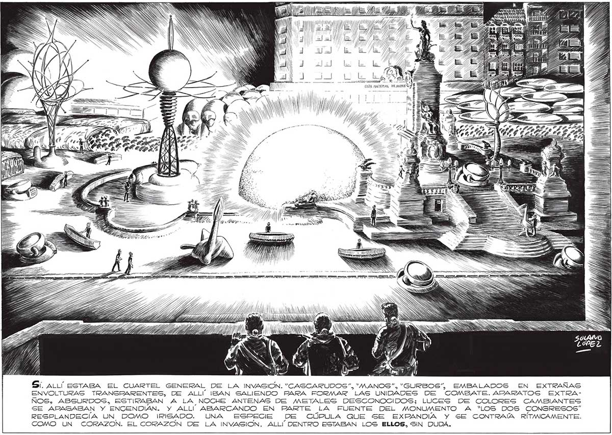

266 15155 1) Ñ V Y JUN // Le = a - eel lite de0tddidid $. CAÑA NACTONAL DI AHORI OS ly AAA GA RA NAAA ai f 2 bl ¿ Sy ES N PAYA So Ñ e —A > E" > S A == NINA S[. ALLÍ ESTABA EL CUARTEL GENERAL DE LA INVASION. “CASCARUDOS”, “MANOS”, "GURBOS”, EMBALADOS EN EXTRAÑAS ENVOLTURAS TRANSPARENTES, DE ALLÍ IBAN SALIENDO PARA FORMAR LAS UNIDADES DE COMBATE. APARATOS EXTRANOS, ABSURDOS, ESTIRABAN A LA NOCHE ANTENAS DE METALES DESCONOCIDOS; LUCES DE COLORES CAMBIANTES SE APBAGABAN Y ENCENDIAN. Y ALL ABARCANDO EN PARTE LA FUENTE DEL MONUMENTO A “LOS DOS CONGRESOS” RESPLANDECÍA UN DOMO IRISADO. UNA ESPECIE DE CÚPULA QUE SE EXPANDIA Y SE CONTRAÍA RÍTMICAMENTE. COMO UN CORAZON. EL CORAZON DE LA INVASION. ALLÍ DENTRO ESTABAN LOS ELLOS, SIN DUDA.
